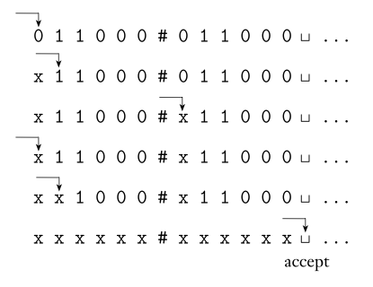

FLAT
9. Turing Machines
December 8, 2019
Introduction
Previous Models
- So far in our development of the theory of computation, we have presented several models of computing devices.
- Finite automata are good models for devices that have a small amount of memory.
- Pushdown automata are good models for devices that have an unlimited memory that is usable only in the last in, first out manner of a stack.
General Purpose Computers?
- We have shown that some very simple tasks are beyond the capabilities of these models.
- Hence they are too restricted to serve as models of general purpose computers.
Turing Machine
- We turn now to a much more powerful model, first proposed by Alan Turing in 1936, called the Turing machine.
- Similar to a finite automaton but with an unlimited and unrestricted memory, a Turing machine is a much more accurate model of a general purpose computer.
- A Turing machine can do everything that a real computer can do.
Turing Machine Limitations
- Nonetheless, even a Turing machine cannot solve certain problems.
- In a very real sense, these problems are beyond the theoretical limits of computation.
Turing Machine
- The Turing machine model uses an infinite tape as its unlimited memory.
- It has a tape head that can read and write symbols and move around on the tape.
- Initially the tape contains only the input string and is blank everywhere else.
- If the machine needs to store information, it may write this information on the tape.
Turing Machine
- To read the information that it has written, the machine can move its head back over it. The machine continues computing until it decides to produce an output.
- The outputs accept and reject are obtained by entering designated accepting and rejecting states.
- If it doesn’t enter an accepting or a rejecting state, it will go on forever, never halting.
Turing Machine Schematic

FA vs. Turing Machines
- A Turing machine can both write on the tape and read from it.
- The read–write head can move both to the left and to the right.
- The tape is infinite.
- The special states for rejecting and accepting take effect immediately.
Example Turing Machine
Example TM
- Let’s introduce a Turing machine M1 for testing membership in the language:
B = \{ w\#w | w \in \{0,1\}^*\}
- We want M1 to accept if its input is a member of B and to reject otherwise.
Imagine you are the TM
- We want M1 to accept if its input is a member of B and to reject otherwise.
- To understand M1 better, put yourself in its place by imagining that you are standing on a mile-long input consisting of millions of characters.
- Your goal is to determine whether the input is a member of B—that is, whether the input comprises two identical strings separated by a # symbol.
Imagine You are the TM
- The input is too long for you to remember it all, but you are allowed to move back and forth over the input and make marks on it.
- The obvious strategy is to zig-zag to the corresponding places on the two sides of the # and determine whether they match.
- Place marks on the tape to keep track of which places correspond.
Operation of our TM
- We design M1 to work in that way.
- It makes multiple passes over the input string with the read–write head.
- On each pass it matches one of the characters on each side of the # symbol.
- To keep track of which symbols have been checked already, M1 crosses off each symbol as it is examined.
Operation of our TM
- If it crosses off all the symbols, that means that everything matched successfully, and M1 goes into an accept state.
- If it discovers a mismatch, it enters a reject state.
M1 Algorithm
- M1 = "On input string w:
- Zig-zag across the tape to corresponding positions on either side of the # symbol to check whether these positions contain the same symbol. If they do not, or if no # is found, reject. Cross off symbols as they are checked to keep track of which symbols correspond.
- When all symbols to the left of the # have been crossed off, check for any remaining symbols to the right of the #. If any symbols remain, reject; otherwise, accept."
M1 Computation
Defining a TM
Defining a TM
- The heart of the definition of a Turing machine is the transition function δ because it tells us how the machine gets from one step to the next.
- For a Turing machine, δ takes the form: Q × Γ −→ Q × Γ × {L, R}. That is, when the machine is in a certain state q and the head is over a tape square containing a symbol a, and if δ(q, a) = (r, b, L), the machine writes the symbol b replacing the a, and goes to state r.
Defining a TM
- The third component is either L or R and indicates whether the head moves to the left or right after writing.
- In this case, the L indicates a move to the left.
Formal Definition
A Turing machine is a 7-tuple, (Q, Σ, Γ, δ, q0, qaccept, qreject), where Q, Σ, Γ are all finite sets and
- Q is the set of states,
- Σ is the input alphabet not containing the blank symbol ␣ ,
- Γ is the tape alphabet, where␣ ∈ Γ and Σ ⊆ Γ,
- δ: Q×Γ\longrightarrow Q×Γ×{L,R} is the transition function,
- q0 ∈ Q is the start state,
- qaccept ∈ Q is the accept state, and
- qreject ∈ Q is the reject state, where qreject != qaccept.
Transition Function Domain
- Let M be a Turing machine defined by (Q, Σ, Γ, δ, q0, qaccept, qreject).
- at any given time M is in some state q \in Q
- and its head is on some tape square containing some tape symbol \gamma \in \Gamma
- The transition function \delta: Q \times \Gamma \longrightarrow Q \times \Gamma \times \{L, R\} depends on the machine state q and on the tape symbol
Transition Function Range
- The range of the transition function are triples of the type (q', \gamma', d)
- where q' is M’s next state,
- \gamma' is the symbol written on the tape cell over which the head was at the beginning of the transition (namely \gamma is replaced with \gamma')
- and d \in \{ L, R\} is the direction towards which the tape head has made a step.
Computation
- A Turing machine M = (Q, Σ, Γ, δ, q0, qaccept, qreject) computes as follows.
- Initially, M receives its input w = w_{1}w_{2} . . . w_{n} \in \Sigma ^* on the leftmost n squares of the tape, and the rest of the tape is blank (i.e., filled with blank symbols).
- The head starts on the leftmost square of the tape.
- Note that Σ does not contain the blank symbol, so the first blank appearing on the tape marks the end of the input.
Computation (2)
- Once M has started, the computation proceeds according to the rules described by the transition function.
- If M ever tries to move its head to the left off the left-hand end of the tape, the head stays in the same place for that move, even though the transition function indicates L.
- The computation continues until it enters either the accept or reject states, at which point it halts.
- If neither occurs, M goes on forever.
Computation Example (again)
TM Configuration
- As a Turing machine computes, changes occur in the current state, the current tape contents, and the current head location.
- A setting of these three items is called a configuration of the Turing machine.
- Configurations often are represented in a special way.
TM Configuration
- For a state q and two strings u and v over the tape alphabet Γ, we write uqv for the configuration where the current state is q, the current tape contents is uv, and the current head location is the first symbol of v.
- The tape contains only blanks following the last symbol of v.
TM Configuration
- For example, 1011q_701111 represents the configuration when the tape is 101101111, the current state is q7, and the head is currently on the second 0:

Yields
- Say that configuration C1 yields configuration C2 if the Turing machine can legally go from C1 to C2 in a single step.
Yields
- We define this notion formally as follows.
- Suppose that we have a,b, and c in Γ, as well as u and v in Γ* and states qi and qj. In that case, ua\ q_{i}\ bv and u\ q_{j}\ acv are two configurations.
- Say that: ua\ q_{i}\ bv\ \textrm{yields}\ u\ q_{j}\ acv if in the transition function δ(q_{i},b) = (q_{j},c,L).
- That handles the case where the Turing machine moves leftward.
- For a rightward move, say that ua\ q_{i}\ bv\ \textrm{yields}\ uac\ q_{j}\ v if δ(q_{i},b) = (q_{j},c,R).
Special Cases
- Special cases occur when the head is at one of the ends of the configuration.
- For the left-hand end, the configuration q_{i}\ bv \textrm{yields} q_{j}\ cv if the transition is left-moving (because we prevent the machine from going off the left-hand end of the tape), and it yields c\ q_{j}\ v for the right-moving transition.
- For the right-hand end, the configuration ua\ q_{i} is equivalent to ua\ q_{i}\ ␣ because we assume that blanks follow the part of the tape represented in the configuration.
- Thus we can handle this case as before, with the head no longer at the right-hand end.
Special Configurations
- The start configuration of M on input w is the configuration q0 w, which indicates that the machine is in the start state q0 with its head at the leftmost position on the tape.
- In an accepting configuration, the state of the configuration is qaccept.
- In a rejecting configuration, the state of the configuration is qreject.
- Accepting and rejecting configurations are halting configurations and do not yield further configurations.
Alternative Transition Function
- Because the machine is defined to halt when in the states qaccept and qreject, we equivalently could have defined the transition function to have the more complicated form δ:Q′×Γ−→Q×Γ×{L,R}, where Q′ is Q without qaccept and qreject.
Alternative Transition Function
- A Turing machine M accepts input w if a sequence of configurations C1, C2, . . . , Ck exists, where
- C1 is the start configuration of M on input w,
- each Ci yields Ci+1, and
- Ck is an accepting configuration.
Language of a TM
- The collection of strings that M accepts is the language of M, or the language recognized by M, denoted L(M).
Definition: Turing-Recognizable
- Call a language Turing-recognizable if some Turing machine recognizes it.
- Some textbooks call this a recursively enumerable language
Outcomes of a TM
- When we start a Turing machine on an input, three outcomes are possible.
- The machine may
- accept,
- reject, or
- loop.
- By loop we mean that the machine simply does not halt.
- Looping may entail any simple or complex behavior that never leads to a halting state.
Outcomes of a TM
- A Turing machine M can fail to accept an input by entering the qreject state and rejecting, or by looping.
- Sometimes distinguishing a machine that is looping from one that is merely taking a long time is difficult.
- For this reason, we prefer Turing machines that halt on all inputs; such machines never loop.
- These machines are called deciders because they always make a decision to accept or reject.
- A decider that recognizes some language also is said to decide that language.
Deciders
- Call a language Turing-decidable or simply decidable if some Turing machine decides it.
- Some textbooks also call these languages recursive languages
Decidable vs. Turing-recognizable
- Every decidable language is Turing-recognizable
- Not every Turing-recognizable language is decidable
Example M2
M2
- Here we describe a Turing machine (TM) M2 that decides:
A = {0^{2^{n}} | n ≥ 0}
- A is the language consisting of all strings of 0s whose length is a power of 2.
M2 Description
M2 = “On input string w:
- Sweep left to right across the tape, crossing off every other 0.
- If in stage 1 the tape contained a single 0, accept .
- If in stage 1 the tape contained more than a single 0 and the number of 0s was odd, reject .
- Return the head to the left-hand end of the tape.
- Go to stage 1.”
M2 Analysis
- Each iteration of stage 1 cuts the number of 0s in half. As the machine sweeps across the tape in stage 1, it keeps track of whether the number of 0s seen is even or odd.
- If that number is odd and greater than 1, the original number of 0s in the input could not have been a power of 2.
- Therefore, the machine rejects in this instance.
- However, if the number of 0s seen is 1, the original number must have been a power of 2.
- So in this case, the machine accepts.
M2 Formal Description
Now we give the formal description of M2 = (Q, Σ, Γ, δ, q~1~, q_{accept}, q_{reject}):
- Q= {q1, q2, q3, q4, q5, qaccept, qreject},
- Σ={0}, and
- Γ={0,x,␣}.
- We describe δ with a state diagram
- The start, accept, and reject states are q1, qaccept,and qreject,respectively.
M2 State Diagram

M2 Sample Run
| q10000 | ␣q5x0x␣ | ␣xq5xx␣ |
| ␣q2000 | q5␣x0x␣ | ␣q5xxx␣ |
| ␣xq300 | ␣q2x0x␣ | q5␣xxx␣ |
| ␣x0q40 | ␣xq20x␣ | ␣q2xxx␣ |
| ␣x0xq3␣ | ␣xxq3x␣ | ␣xq2xx␣ |
| ␣x0q5x␣ | ␣xxxq3␣ | ␣xxq2x␣ |
| ␣xq50x␣ | ␣xxq5x␣ | ␣xxxq2␣ |
| ␣xxx␣qaccept |
Descriptions of Turing Machines
Descriptions
- As we did for finite and pushdown automata, we can formally describe a particular Turing machine by specifying each of its seven parts.
- However, going to that level of detail can be cumbersome for all but the tiniest Turing machine, so we won’t spend much time giving such descriptions.
- Higher level descriptions are precise enough for our purposes and they are easier to understand
- Nevertheless, it is important to remember that every higher level description is actually just shorthand for its formal counterpart.
Example M1
M1
Let M1 be a Turing machine that decides lan- guage B = \{w\#w| w ∈ \{0,1\}^*\}
M1 =(Q,Σ,Γ,δ,q1,qaccept,qreject)
M1
- Q={q1,…,q8,qaccept,qreject}
- Σ={0,1,#}
- Γ={0,1,#,x,␣}.
- δ is described in the state diagram below
- The start, accept, and reject states are q1, qaccept, and qreject, respectively.
M1 Transition Diagram

- Note: to simplify the figure, the reject state has been omitted. All states which lack a transition on a particular symbol should reject.
Practice M3
L(M3)
Here, a TM M3 is doing some elementary arithmetic. It decides the language
C = \{a^{i}b^{j}c^{k}\ |\ i × j = k\ and\ i, j, k ≥ 1\}.
M3 = “On input string w:
M3 Algorithm
- Scan the input from left to right to determine whether it is a member of \{a^+b^+c^+\} and reject if it isn’t.
- Return the head to the left-hand end of the tape.
- Cross off an a and scan to the right until a b occurs. Shuttle between the b’s and the c’s, crossing off one of each until all b’s are gone. If all c’s have been crossed off and some b’s remain, reject.
M3 Algorithm
- Restore the crossed off b’s and repeat stage 3 if there is another a to cross off.
- If all a’s have been crossed off, determine whether all c’s also have been crossed off. If yes, accept; otherwise, reject .”
Example M4
L(M4)
TM M4 is solving what is called the element distinctness problem. It is given a list of strings over {0,1} separated by #s and its job is to accept if all the strings are different. The language is:
E = \{\#x_{1}\#x_{2}\#...\#x_{l}|\ each\ x_{i} ∈ \{0,1\}* \\ and\ x_{i} \not=\ x_{j} for\ each\ i \neq j\}.
M4 High Level Description
Machine M4 works by comparing x1 with x2 through xl, then by comparing x2 with x3 through xl, and so on.
M4 Informal Description
M4 = “On input w:
- Place a mark on top of the leftmost tape symbol. If that symbol was a blank, accept . If that symbol was a #, continue with the next stage. Otherwise, reject.
- Scan right to the next # and place a second mark on top of it. If no # is encountered before a blank symbol, only x1 was present, so accept.
M4 Informal Description
- By zig-zagging, compare the two strings to the right of the marked #s. If they are equal, reject .
- Move the rightmost of the two marks to the next # symbol to the right. If no # symbol is encountered before a blank symbol, move the leftmost mark to the next # to its right and the rightmost mark to the # after that.
M4 Informal Description
- This time, if no # is available for the rightmost mark, all the strings have been compared, so accept .
- Go to stage 3.”